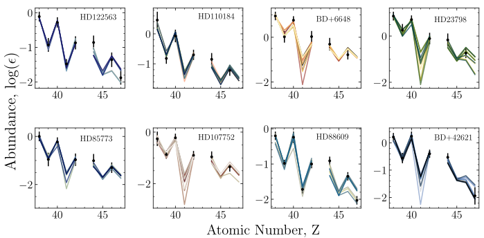

Survey of the astrophysical conditions that produce light heavy elements in metal-poor stars
Thanassis Psaltis (@psaltistha)
TU Darmstadt, Institut für Kernphysik Theoriezentrum
26.10.2022
OMEG16
How I see nuclear astrophysics


HD 122563 (DSS2/ Aladin Sky Atlas)
What do the old stars reveal to us?


⚠️ Solar r-process = Solar total - Solar s-process - Solar p-process
How many "r-processes" contribute to the production of elements between Sr and Ag?
Nucleosynthesis
in neutrino-driven ejecta
How I see nuclear astrophysics

$\nu p$-process and weak $r$-process
$\nu p$-process and weak $r$-process
Chart of nuclides with the two processes!Take-home message #1
Elements between Sr and Ag can be produced in $\nu$-driven outflows via the weak $r$-process
Which are the most favourable astrophysical conditions?
How I see nuclear astrophysics

Methods
\[ P = \sum_{i=1}^N w_i Y_i \] \[ \begin{bmatrix} 1 & 2 & 3\\ a & b & c \end{bmatrix} \]
Total number of unique combinations: $C_r = N! / r! (N - r)!$, for example 2 conditions out of 36 yields 630 combinations
Methods
\[ \mathrm{minimize}~ ||A w - O||^2 \]
Least-squares problem solved using sklearn
Example: 2 neutron-rich conditions for
HD 122563
Example: 2 neutron-rich conditions for
HD 122563
2 neutron-rich conditions for all stars
How I see nuclear astrophysics

Proton-rich conditions
We find a very narrow window of $\Delta_n$ that better reproduces the abundance pattern ($\Delta_n \approx 16\pm 2$).
Which are the most common conditions?
The most important $(\alpha,n)$ reactions
for the weak $r$-process
Take-home message #2
We combined observations, astrophysical modeling and nuclear theory
to study the impact of $(\alpha,xn)$ reactions to the weak $r$-process
How I see nuclear astrophysics
First measurement of the $\boldsymbol{\mathrm{^{93}Sr}(\alpha,xn)\mathrm{^{96-x}Zr}}$ reaction
$\mathrm{^{93}Sr}(\alpha,xn)\mathrm{^{96}Zr}$ at Argonne with MUSIC


- Re-accelerated $\mathrm{^{93}Sr}$ beam from CARIBU.
- Close to 100% efficiency.
- Measure a large range of excitation functions of angle and energy integrated cross sections using single beam energy
$\mathrm{^{7}Be}(\alpha,\gamma)\mathrm{^{11}C}$ at TRIUMF with DRAGON
- Re-accelerated $\mathrm{^{93}Sr}$ beam from CARIBU.
- Close to 100% efficiency.
- Measure a large range of excitation functions of angle and energy integrated cross sections using single beam energy
Acknowledgements
 Almudena Arcones
Almudena Arcones
 Melina Avila
Melina Avila
 Camilla Juul Hansen
Max Jacobi
Zach Meisel
Camilla Juul Hansen
Max Jacobi
Zach Meisel
 Peter Mohr
Peter Mohr
 Fernando Montes
Wei Jia Ong
Hendrik Schatz
Fernando Montes
Wei Jia Ong
Hendrik Schatz


Summary and future plans
- Elements between Sr and Ag can be produced
in neutrino-driven outflows via the weak $r$-process. - We combined observations, astrophysical modeling and nuclear theory
to study the impact of $(\alpha,xn)$ reactions to the weak $r$-process. - Future $(\alpha,xn)$ experiments using rare isotope beams (RIBs)
will shed light on the production of elements between Sr and Ag.